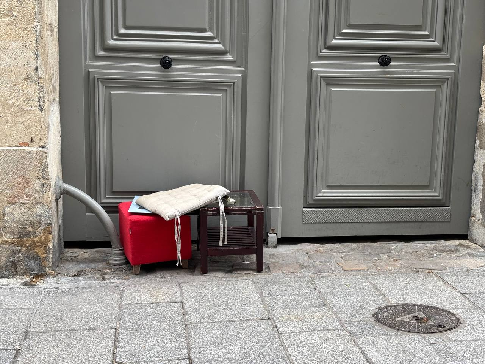

dictionnaire de la rue · Paris, 2022 —
garbage n. angl., indénombrable
/ˈɡɑːr.bɪdʒ/ · en français : ordures, déchets, poubelle
- 1. Déchets ; choses que l’on jette.
l’intime rendu public,
le dedans mis dehors
Garbage of Paris est une sociologie visuelle des déchets, des traces et de la vie urbaine. Sacs, poubelles, taches, objets, signes — photographiés là où on les a laissés.
Snezhana

à propos du projet loc.
Je m’appelle Snezhana. Ou Jane. Comme vous voulez. Je suis sociologue et je photographie des déchets.
Voici donc Garbage of Paris. Sacs, poubelles, taches, objets, signes. L’intime rendu public. Le dedans mis dehors.
L’interprétation est laissée à chacun.
« Le déchet constitue un objet de contemplation idéal. »trouvailles fraîches n. f. pl.
galerie
Toutes les photos, à filtrer par année et par catégorie.
ouvrir → § 04GOP-ARCarchives
Chaque trouvaille, classée par année. Un dictionnaire de la rue.
ouvrir → § 07GOP-CURcurieux
Fouille une poubelle parisienne et découvre d’où viennent les déchets. Pour les enfants.
jouer → § 05GOP-MANmanifeste
Pour en savoir plus. En français, in English и по-русски.
lire →